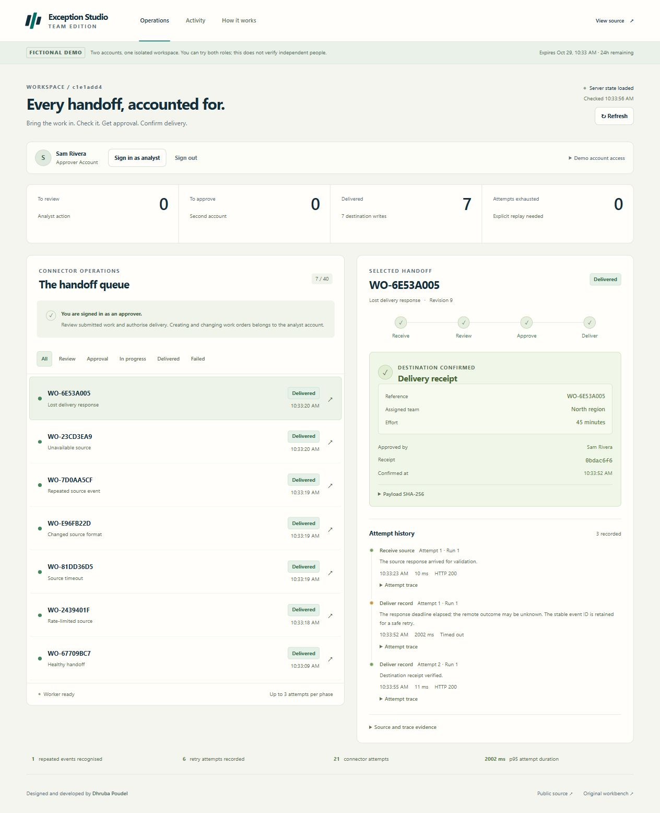
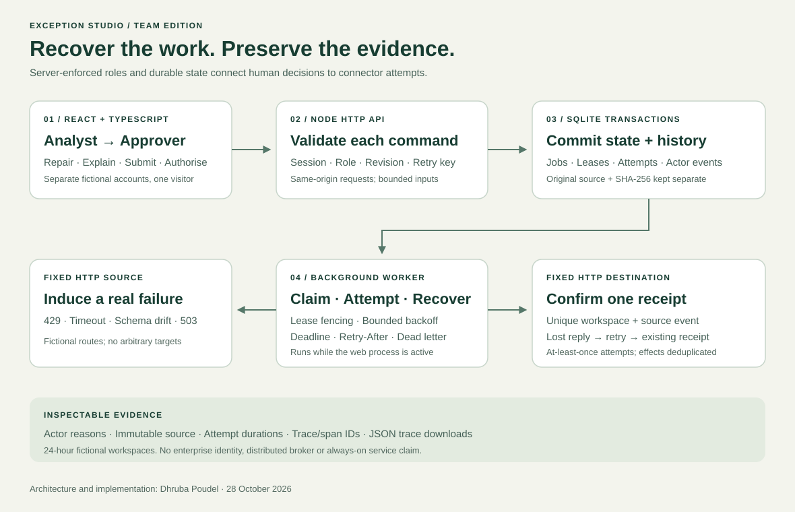

Original project · Workflow & integration engineering
Exception Studio
Team Edition
Recover the work.
Keep the evidence.
- The problem
- A failed integration needs a recoverable next step, without losing its source or repeating a completed side effect.
- My contribution
- A working team workflow: durable jobs, server-enforced roles, a recovery worker and downloadable delivery traces.
- Engineering focus
- Lease fencing, bounded retries, schema repair, revision checks and receipt deduplication under real HTTP faults.

A timeout should not leave the next person guessing.
A connector may be rate-limited, return a different schema, or stop responding after it has already written a result. Blind retries can repeat effects. Silent corrections hide context. An approval button is only useful when the server enforces who can use it.
I developed Team Edition as a working recovery lab around these decisions. It connects fictional HTTP sources and destinations to persistent jobs, explicit analyst review and separate approver authorisation. The interface shows the state, attempts and reasons behind each delivery.
Attempts may repeat; a unique workspace/event receipt prevents a second destination write. This is tested at-least-once handling with deduplicated sandbox effects, rather than a universal exactly-once guarantee.
Separate responsibilities, enforced beyond the interface.
Creating a 24-hour demo workspace provisions two fictional accounts. Avery Chen is the analyst; Sam Rivera is the approver. They sign in separately, and the API checks the account and role for every protected command. A visitor controls both accounts to explore the workflow.
- As the analyst, queue a source scenario and inspect its actual HTTP attempts.
- Repair changed fields or replay a restored source, keeping the original source and reasons.
- Submit the validated payload for approval.
- Switch to the approver account and authorise delivery.
- Inspect the destination receipt, actor history and downloaded JSON trace.
Source success never skips human review. Polling for an updated snapshot does not authorise a change. Each human decision checks its expected revision inside the transaction, so stale decisions fail without overwriting newer work.
Durable state before the network call.
The React client reads snapshots from a same-origin Node HTTP API. SQLite transactions store accounts, sessions, jobs, revisions, leases, attempts, actor events and receipts. Shared TypeScript contracts connect the interface to API response shapes; runtime input validation remains on the server.

Claim, commit, then attempt
The worker claims a job in a short transaction and records a lease before HTTP begins. Completion must carry that same lease token. An old response cannot overwrite a replacement worker’s newer claim; expired claims become retryable or reach dead letter at the configured bound.
Recover a command without repeating it
Enqueue, review, approve and replay commands carry an idempotency key bound to the actor, route and canonical body. A matching retry returns the current workspace snapshot without repeating the action. Altered reuse conflicts. Invalid or stale commands roll back without consuming a successful-command record.
Original source content and SHA-256 remain separate from corrected payloads. Attempt histories retain phase, generation, outcome, HTTP status, measured duration and trace/span IDs. Receipt payload hashes connect delivery evidence to the reviewed content.
Read the implementation and hosting decisionsDemonstrate uncertainty, then show the recovery.
The sandbox uses real HTTP exchanges on fixed fictional routes. Bounded backoff respects Retry-After. Each phase permits three attempts per generation. Schema errors require analyst correction; an unavailable source reaches dead letter and needs an explicit reasoned replay.
The destination commits its receipt, then deliberately delays its reply. The worker times out and retries the same event and payload. The destination returns the existing receipt, with one committed write. A lost reply does not become a duplicated delivery.
The hosted worker calls only the app’s configured HTTPS origin and fixed sandbox paths, with a private database-backed application key. It accepts no visitor-supplied destination URL, follows no redirect and applies a deadline to the complete bounded response.
The UI retains the original key and body when a command’s outcome is uncertain. The user can retry that exact request or reload the saved state. Recovery is explicit; an unreadable response is never replaced with a fabricated success.
Evidence attached to the demonstrated revision.
On 28 October 2026, 110 automated tests passed: 81 domain, store, HTTP and transport tests, plus 29 UI tests. The runtime revision also passed formatting, a production build and the production dependency audit. These checks cover both Team Edition and the retained classic workbench.
The live HTTPS walkthrough exercised all seven scenarios through the interface. Final totals were seven delivered jobs and seven destination writes, with one recognised duplicate. Every source and receipt payload hash matched an independent recomputation from the downloaded traces.
| Scenario | Observed behaviour | Result |
|---|---|---|
| Healthy handoff | Source, analyst review, separate approver and destination receipt. | One delivered job; one write. |
| Rate limit | Source returned 429, 429, then 200. | Retried and delivered with the same job identity. |
| Source timeout | The first attempt exceeded the hosted deadline. | The next attempt succeeded and reached review. |
| Schema drift | Analyst mapped workOrder → reference and region → team. | Original source and 45-minute value preserved. |
| Duplicate event | The repeated-event scenario was queued twice. | One job and one receipt; duplicate counted once. |
| Upstream outage | Three 503 attempts reached dead letter; explicit restoration/replay. | Generation 2 delivered. |
| Lost delivery reply | A receipt committed before a 2,002 ms timeout; retry confirmed it. | One destination write, despite two delivery attempts. |
Automated checks also cover competing claims, stale revisions, role and workspace boundaries, restart recovery, full-response deadlines, command retry handling and client recovery. Browser checks verified desktop and 390 px layouts without page overflow, another-tab session recovery and all seven trace downloads. UI unit tests use a simulated DOM; this is not a complete accessibility or security audit.
Inspect the verified runtime, CI run and seven downloadable tracesThe original data-review workbench remains available.
Classic Edition preserves the earlier CSV workflow: import a bundled fictional dataset, explain each held record, check reconciliation, then freeze CSV bytes and their matching manifest. Its source rows remain separate from later corrections.
Watch the original Classic Edition walkthrough
The Classic walkthrough’s earlier verified result was 21 accepted records, no held records and one explained exclusion, with the downloaded CSV hash matching its manifest. That evidence describes Classic Edition; the seven connector-recovery scenarios above describe Team Edition.
A public engineering lab with a clear operating boundary.
The accounts, records, connectors and induced failures are fictional. One visitor controls both analyst and approver accounts; the demo does not establish independent human approval or organisational identity. Review reasons reach the server and must also remain fictional.
Workspaces expire after 24 hours. Persistent jobs resume when the web process runs and the same SQLite file survives; hosting redeployment or storage replacement can reset the demo. Processing is not guaranteed to run unattended or always-on. Expiry cleanup is not secure erasure.
The application uses a bounded SQLite queue, not a distributed broker. Trace IDs are application evidence, not a claim of an installed OpenTelemetry service. The project claims no measured customer savings, production qualification or independent quality score.